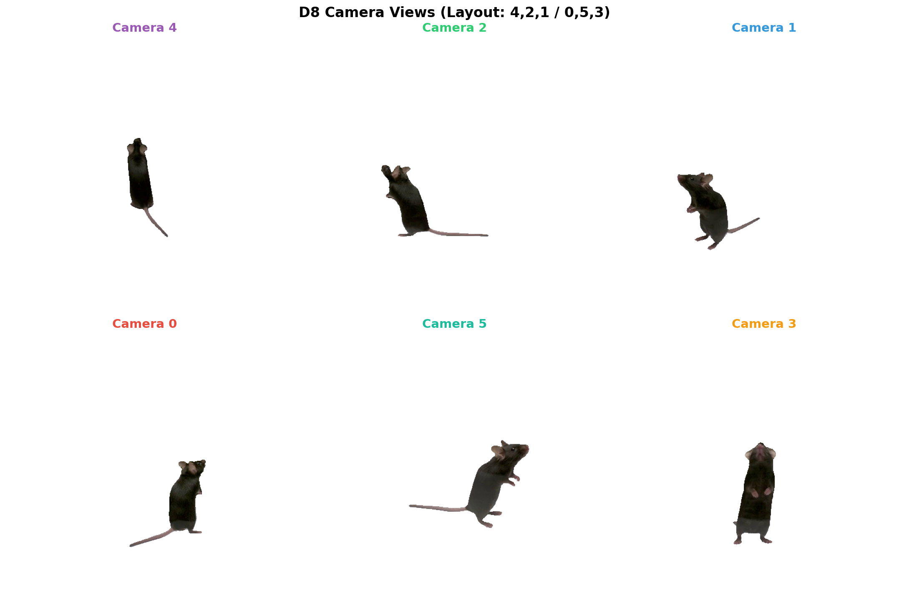
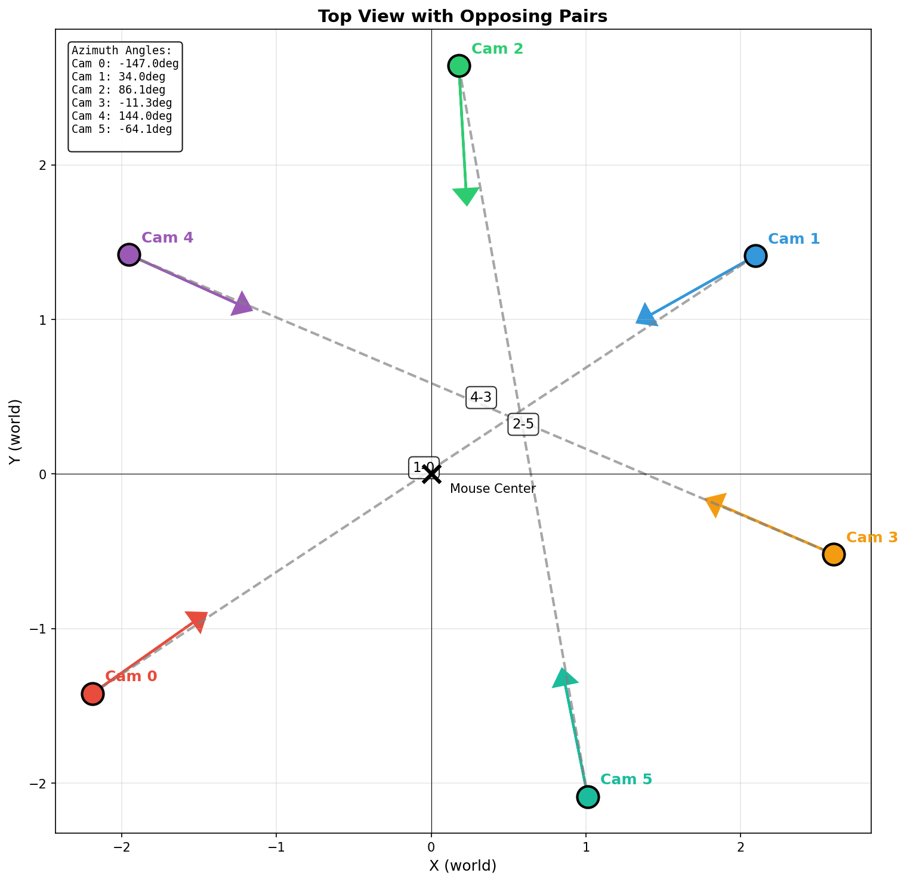
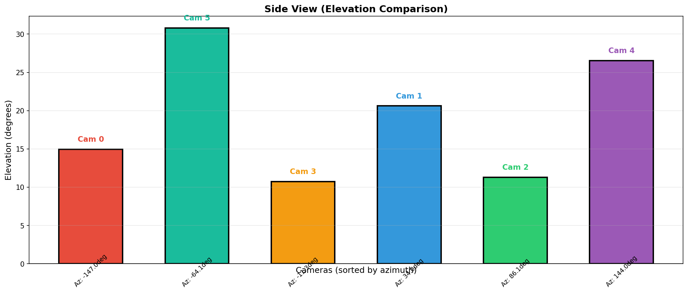
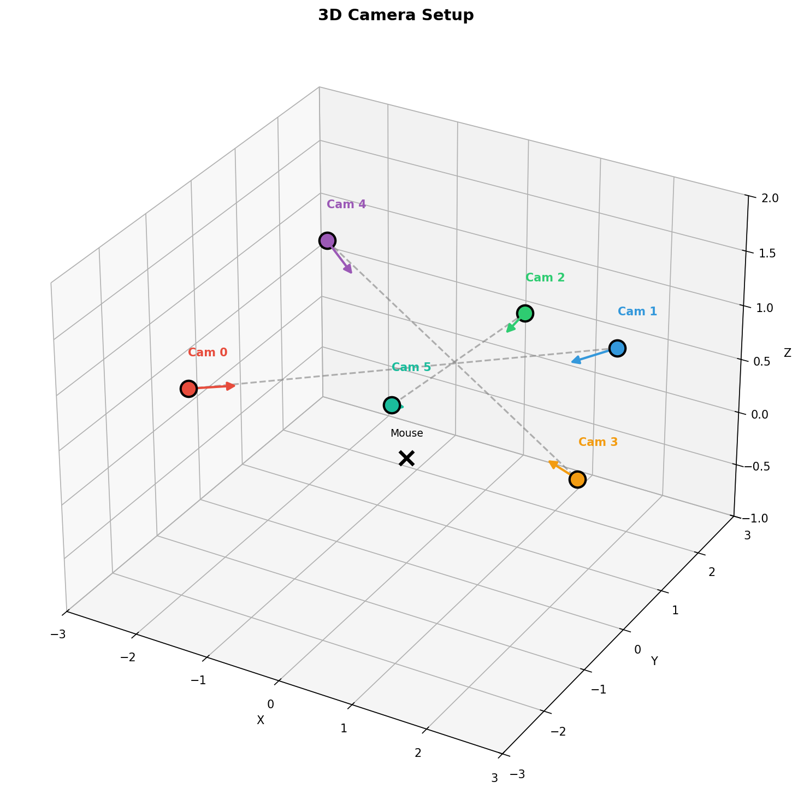
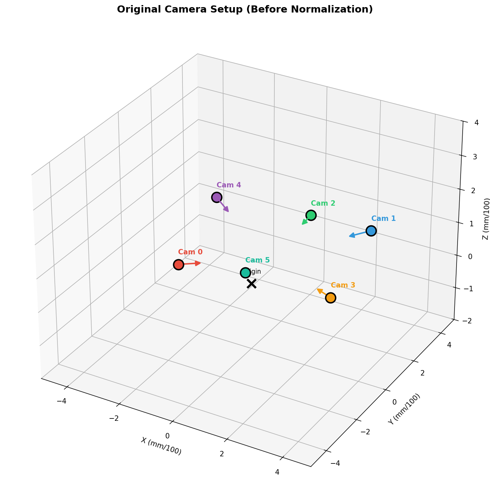
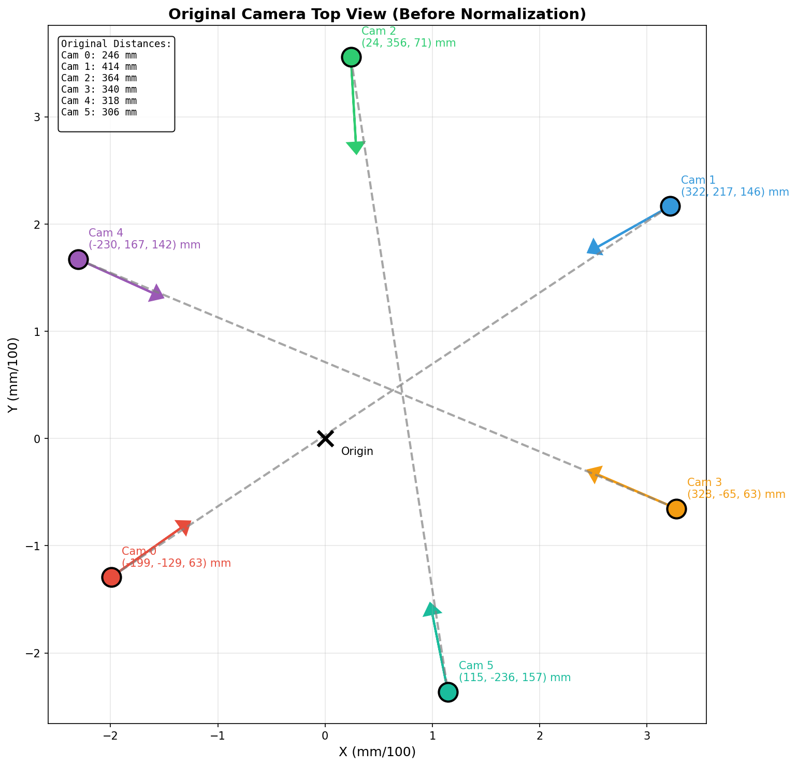

Generated: 2026-01-21 20:33 | Data: markerless_mouse_1_nerf | Version: D8

Camera layout arranged to show opposing pairs visually aligned.

Opposing pairs: 4-3, 2-5, 1-0

Elevation angles by camera

| View | fx | fy | cx | cy | skew | Distance (mm) |
|---|---|---|---|---|---|---|
| Cam 0 | 1632.3 | 1639.3 | 601.3 | 491.2 | -5.82 | 246.1 |
| Cam 1 | 1556.8 | 1580.5 | 622.0 | 417.5 | 1.39 | 414.5 |
| Cam 2 | 1630.3 | 1633.0 | 611.4 | 477.6 | -0.91 | 363.7 |
| Cam 3 | 1606.2 | 1617.6 | 582.6 | 551.9 | -5.89 | 340.0 |
| Cam 4 | 1618.3 | 1628.9 | 641.5 | 453.2 | -1.27 | 318.3 |
| Cam 5 | 1636.9 | 1642.5 | 613.3 | 524.3 | -4.93 | 305.7 |
| View | fx | fy | cx | cy | Azimuth | Elevation | Distance |
|---|---|---|---|---|---|---|---|
| Cam 0 | 548.9938 | 548.9938 | 256.0 | 256.0 | -147.0 deg | 14.9 deg | 2.7000 |
| Cam 1 | 548.9938 | 548.9938 | 256.0 | 256.0 | 34.0 deg | 20.6 deg | 2.7000 |
| Cam 2 | 548.9938 | 548.9938 | 256.0 | 256.0 | 86.1 deg | 11.3 deg | 2.7000 |
| Cam 3 | 548.9938 | 548.9938 | 256.0 | 256.0 | -11.3 deg | 10.7 deg | 2.7000 |
| Cam 4 | 548.9938 | 548.9938 | 256.0 | 256.0 | 144.0 deg | 26.5 deg | 2.7000 |
| Cam 5 | 548.9938 | 548.9938 | 256.0 | 256.0 | -64.1 deg | 30.8 deg | 2.7000 |
| Method | Paradigm | fx | PP (cx,cy) | Skew | Geometry | Ray Error | Rec. |
|---|---|---|---|---|---|---|---|
| D4 | object_centered_crop | 549 | 256 (forced) | ignored | WRONG | ~5-17 deg | - |
| D6-1 | no_crop_resize | 549 | varies | ignored | correct | 0 deg | - |
| D7 | pp_centered_shift | 549 | 256 | ignored | correct | ~0.17 deg | - |
| D7.1 | pp_centered_shift | 549 | 256 | ignored | correct | ~0 deg | OK |
| D8 | precision_homography | 548.9938 | 256 | corrected | correct | ~0 deg | Best |
| D8.1 | homography+zoom | 713.69 | varies | corrected | correct | see sec 6 | Large mouse |
The key difference from D7 is using homography instead of affine:
\[ H = K_{target} \cdot K_{orig}^{-1} \]This correctly handles:
| Metric | Value |
|---|---|
| Image Size | 512 x 512 = 262,144 px |
| Mouse Pixels | 6,681 px |
| Mouse Area Ratio | 2.5% |
| Bounding Box | 140 x 161 px |
| Linear Size Ratio | 29.3% |
| Error Amplification | 3.41x |
When the mouse occupies ~29% of the image linearly:
| Metric | D8 | D8.1 | Improvement |
|---|---|---|---|
| Mouse Pixels | 6,681 | 11,359 | +70% |
| Linear Size | 29.3% | 38.3% | +9.0% |
| Error Amp. | 3.41x | 2.61x | -23% |
D8.1 applies 1.3x zoom via crop+resize, which changes the effective focal length:
| Statistic | cx | cy |
|---|---|---|
| Min | 202.8 | 178.1 |
| Max | 332.8 | 227.5 |
| Mean | 265.4 | 201.1 |
| Std Dev | 45.3 | 19.8 |
To use D8.1 data with GS-LRM pretrained model (expects fx=549, cx=256):
Option 1: Use D8.1 as-is
Option 2: Post-process to match GS-LRM
For pixel (u, v), the ray direction in camera coordinates:
\[ \mathbf{d}_c = \begin{bmatrix} (u - c_x) / f_x \\ (v - c_y) / f_y \\ 1 \end{bmatrix} \]At image edge (u=0 or u=512):
\[ \theta_{error} = \arctan\left(\frac{\Delta c_x}{f_x}\right) \]For D8 with cx=256, cy=256 (exact): ray error ~0 deg
For D4 with PP error ~37px: ray error = arctan(37/549) ≈ 3.9 deg
| Use Case | Recommended | Reason |
|---|---|---|
| Standard training | D8 | Exact GS-LRM params, skew corrected |
| Larger mouse needed | D8.1 | 1.3x zoom, ~40% larger mouse pixels |
| Legacy comparison | D7.1 | Compatible with previous experiments |
cd /home/joon/dev/FaceLift
python -m mouse_extensions.preprocessing.preprocess \
--preset D8 \
--input-dir /home/joon/data/raw/markerless_mouse_1_nerf \
--output-dir /home/joon/data/preprocessed/FaceLift_mouse/D8
cd /home/joon/dev/FaceLift
python -m mouse_extensions.preprocessing.preprocess \
--preset D8.1 \
--input-dir /home/joon/data/raw/markerless_mouse_1_nerf \
--output-dir /home/joon/data/preprocessed/FaceLift_mouse/D8_1
Generated by generate_comprehensive_d8_report.py | FaceLift Mouse Extension | 2026-01-21 20:33
The following shows the camera positions in the original coordinate system (mm scale) before transformation to the normalized GS-LRM format.

Original camera positions (distances 246-415mm)

Original top view with mm coordinates